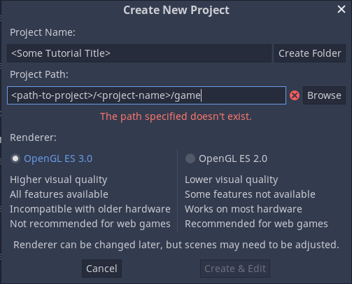
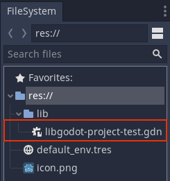
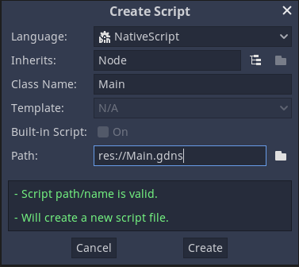

Godot Haskell Part 1 - Hello World!
Basic Scaffolding
tools required for this: stack, godot.
Create a new stack project to start our adventure.
stack new <project-name> https://yellowonion.github.io/godot-haskell.hsfiles
cd <project-name>
mkdir gamethe directory structure should look like:
├── ffi
│ ├── cbits
│ │ └── flib.c
│ └── flib
│ └── FLib.hs
├── game
├── game-tmp
│ └── lib
│ └── libgodot-project-test.gdnlib
├── godot-project-test.cabal
├── Makefile
├── src
│ └── Lib.hs
└── stack.yamla quick breakdown of the folder structure:
fficontains C-wrapper code that allows Godot to load our Haskell code.gameis where our game will reside.game-tmpis boilerplate for loading our “C” library in a godot project.src/Lib.hscontains a basic Hello World example, using the classMain
Create a new godot project in the game folder:

Merge the contents of game-tmp in to game:
mv game-tmp/* game/
rmdir game-tmpIn the bottom left of Godot you should be able to see that lib\lib<project-name>.gdnlib as appeared.

Pin your godot-haskell and haskell versions by editing stack.yaml, as an example:
resolver: lts-17.14
extra-deps:
- git: https://github.com/SimulaVR/godot-haskell.git
commit: e8f2c45f1b9cc2f0586ebdc9ec6002c8c2d384aeBuild your project:
make stack-watchYour first Haskell scene.
Right click on the FileSystem panel, and create a new script, select NativeScript for the language, Main for Class Name (as per what is defined in src/Lib.hs) and Path should be a name corresponding to our Node we will create next, usually these all have the same name by convention.

In the Scene panel click Other Node and create a Node, right click on Node and rename Node to Main, In the Inspector panel on the left, expand script and then load your Main.gdns.
In FileSystem, reselect Main.gdns by double clicking, you should now see Library in the Inspector, Load your libgodot-<project-name>.gdnlib from the lib folder.
Finally save your scene, click that play button in the top-left or hit F5, select Main.tscn as your main scene, and then you should see the following text in the output console at the bottom:
--- Debugging process started ---
Godot Engine v3.2.3.stable.custom_build - https://godotengine.org
OpenGL ES 3.0 Renderer: Radeon RX 580 Series (POLARIS10, DRM 3.40.0, 5.11.21, LLVM 11.1.0)
Seconds passed: 1
Seconds passed: 2
Seconds passed: 3
Seconds passed: 4
Seconds passed: 5
Seconds passed: 6
Seconds passed: 7
...